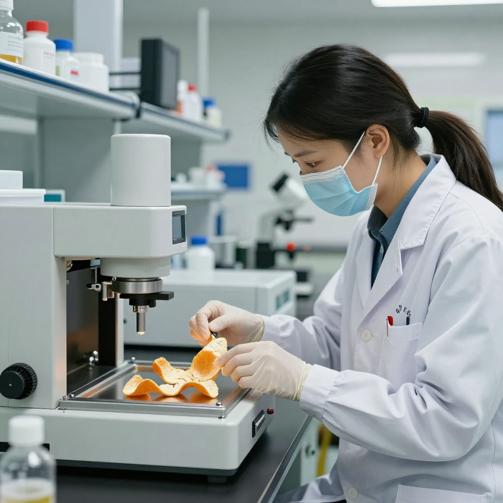
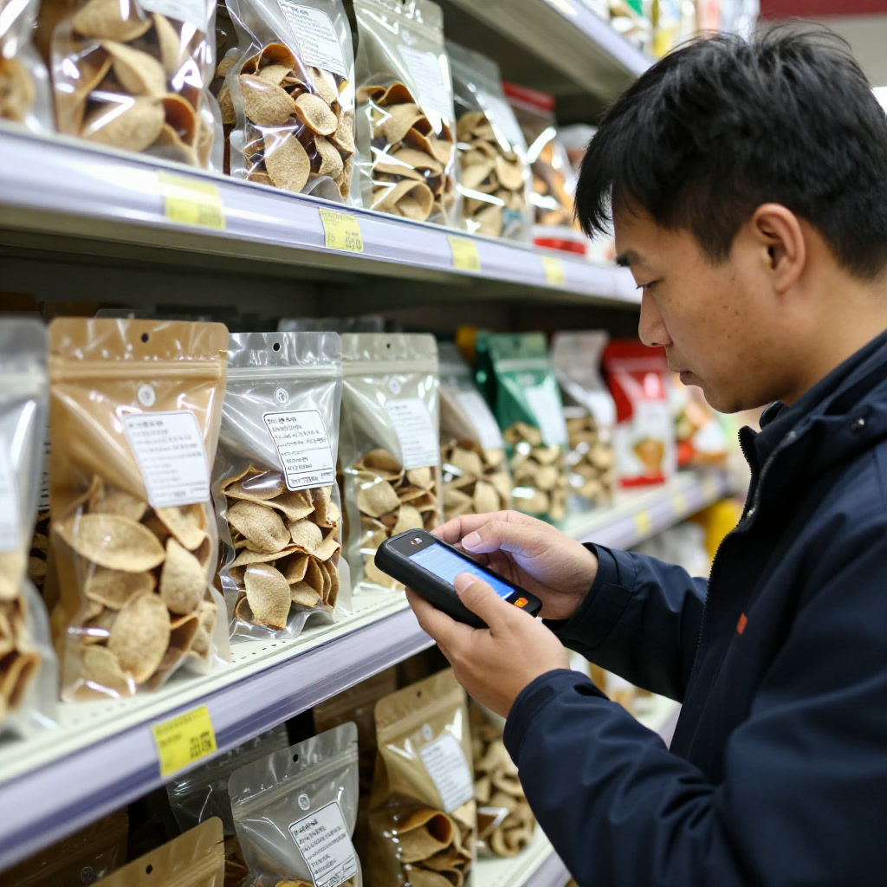

2026年9月15日｜滢滢姐讲陈皮故事｜每日热点综述
导语：一片柑皮，撑起一个千亿级别的产业野心
今日陈皮圈最热的关键字，是“千亿”。
从广东亚太大健康产业有限公司宣布投资8亿元打造全国首个陈皮全链条产业园，到新会陈皮全产业链产值剑指280亿、向千亿台阶稳步迈进；从央视《财经调查》曝光广西浦北陈皮造假黑幕后行业加速建立溯源体系，到五邑大学陈皮学院落地面向“年份鉴定”“无损检测”等核心难题攻关——新会陈皮这个承载近千年历史的“土特产”，正以科技、金融、品牌三位一体的姿态，迎来自己的“黄金时代”。
今天的热点日报，滢滢姐为你梳理六大值得关注的头部事件。
一、亚太陈皮产业园落子新会，8亿投资开启千亿赛道
9月19日媒体发布会消息正式落地：广东亚太大健康产业有限公司计划投资8亿元，在新会建设占地5.3万平方米、建筑面积超15万平方米的“亚太陈皮产业园”。这是全国首个集工、商、文、旅四位一体的陈皮全链条产业平台，目前已与310户柑农建立合作，辐射果园约4万亩，规划仓储能力4500吨，预计陈皮货值超160亿元。
产业意义：从“田间到餐桌”的全产业闭环首次成型，新会陈皮正式告别散户、作坊式经营，向规模化、现代化、标准化跃迁。这是产业从“百亿”冲向“千亿”的关键基建工程。
来源：新浪财经／华夏时报报导（2026年9月21日）
二、五邑大学陈皮学院落成，院士领衔破解“年份鉴定”难题
2026年3月18日，五邑大学陈皮学院正式揭牌。这所由五邑大学、新会区政府、陈皮行业协会共建的科研机构，聚焦产业核心技术难题：陈皮年份鉴定、无损检测、活性成分提取等。中国工程院院士单杨在揭牌仪式上作主旨演讲，从国家特色农产品高质量发展战略高度，阐释道地陈皮的科学价值。

科研团队已展示陈皮多糖提取纯化、高附加值产品开发等系列成果——一块陈皮，正式从农产品升级为食品科技与生物医药领域的重要研究对象。
来源：21经济网（2026年5月21日《产销“信任裂缝”逐渐显现，新会陈皮如何破局突围？”）
三、中国供销（江门）新会陈皮产业园开业，全链条标准化再升级
2025年12月12日，由新会区供销社主导建设的中国供销（江门）新会陈皮产业园正式开业，标志着新会陈皮从传统种植经营模式向智慧化、标准化全链条升级。
产业园立足“1园区·3平台·5中心”战略：交易平台、供销平台、“832”消费帮扶平台三大平台同步搭建，配套建成退役军人服务中心、贸易中心、数据中心、检测中心和展销中心。在三江镇深吕村、会城天马村等核心产区试点推广“订单农业+全程社会化服务”模式，从源头保障种植户收益。
来源：江门市新会区人民政府网（2025年12月19日）
四、央视曝光广西浦北陈皮造假，行业加速建立溯源防线
2025年12月14日，央视《财经调查》栏目曝光一起造假黑幕：成本仅70元/斤的广西浦北陈皮，经速成加工、年份虚标、产地造假后，被包装为广东新会陈皮，单价冲高至1000元/斤。“陈皮造假”话题冲上热搜，全网阅读量迅速破亿。
行业调研数据显示：82%的消费者无法辨别陈皮年份，75%分不清产地，61%仅听过圈枝、驳枝等概念却无辨别能力。针对此，新会区市场监管局持续推广地理标志专用标志和证明商标的规范使用，引导企业申报“湾区认证”；新会陈皮行业协会明确表态，将“以零容忍态度打击造假售假行为”，全力推进溯源体系建设。

来源：36氪／CBNData（2025年12月报导）
五、年产值剑指280亿，2025年再创历史新高
江门新会陈皮全产业链年总产值从2021年的145亿元，跃升至2024年的261亿元，连续三年位居中国区域农业产业品牌影响力指数榜首位。2025年预计突破280亿元大关，带动就业创业超过7.8万人，人均增收超2.6万元。
值得关注的是，新会海关辖区企业2025年1—10月出口新会陈皮及制品货值达289.9万元，同比增长89.45%；新会陈皮村“吴村长”品牌通过美国FDA认证，2023年在美国洛杉矶核心商圈开设首家旗舰店，正式融入西方市场。
来源：江门市人民政府门户网站、粤港澳大湾区门户网
六、健康消费新场景：“陈皮咖啡”成流量密码
2025年以来，陈皮沿着健康饮品的路线狂奔。“陈皮咖啡”成为新晋流量密码，甘苦交融的风味意外契合“朋克养生”的年轻人情绪；陈皮风味金酒、陈皮艾尔啤酒联名精酿相继推出。“打工人陈皮续命水”“熬夜自救陈皮膏”等梗化表达，让陈皮完成了从“药材”到“社交货币”的破圈。
《2025—2030年中国陈皮行业竞争格局及投资规划深度研究分析报告》指出，2025年中国陈皮行业全产业链产值预计突破500亿元大关，同比增长33.7%；2023—2025年复合增长率将达35.4%。药食同源政策放开后，陈皮被纳入《可用于保健食品的中药名单》，功能性食品市场规模将突破50亿元。
来源：36氪、CBNData
七、陈皮造假套路拆解：年份、品相、品牌的三重迷雾
2011年首届中国新会陈皮文化节上，一份自报1982年珍藏的陈皮成为“新会陈皮皇”，拍出11万元/100克的高价（合55万元/斤）。
消费市场上：15年份陈皮均价约2000元/斤，礼盒装可达3000+元/斤；20年份已能冲破10000元/斤。但普通消费者投资陈皮，风险远超想像。据第一财经报导，新会本地陈皮经营户直言：“这么多年来，我认识做陈皮投资的，除了一些渠道、品牌商之外，普通消费者几乎没有一个可以通过陈皮投资赚到钱，全部都是交学费。”
投资陈皮的关键，是要有人承接转手。很多打着“陈皮投资”旗号的项目，“陈皮”只是幌子，往往运作3年左右就会快速回购，因为假皮存放五六年基本就没有香味了——“两到三年内不回购脱手，就全砸在自己手里”。
来源：第一财经／证券时报《市场热炒下有人“踩坑” 新会陈皮谋求成为标准投资品》
结语：信任比黄金更珍贵
今日的陈皮圈，本质上演绎的是一场“信任重建”运动。
从亚太产业园的8亿投资，到五邑大学陈皮学院的院士攻关，从中国供销产业园的全链条标准化，到央视曝光后行业加速建立溯源体系——所有这些动作的底层逻辑，都是在回答同一个问题：一片柑皮，要如何让消费者“敢买、敢喝、敢藏”？
当千亿赛道的号角吹响，当“陈皮咖啡”走进万千年轻人的日常，当越来越多港澳青年、海归博士返乡成为“新农人”——新会陈皮的故事，远未结束。
而我们能做的，是守住那份对道地、对年份、对匠心的基本尊重。
毕竟，“一两陈皮一两金，百年陈皮胜黄金”——这份价值，从来不是时间的魔法，而是人与土地的共谋。
滢滢姐讲陈皮故事 · 每日陈皮热点日报 · 为你梳理当日最有价值的陈皮资讯
免责声明：本文内容整理自公开新闻报导与行业研究报告，仅供资讯参考，不构成任何投资建议。陈皮市场存在年份造假、产地造假等乱象，购买陈皮请认准正规渠道与溯源认证。
使用提示
本文只作一般资料整理，不构成食品安全、营养、收藏投资或者医疗建议。选购、保存或者食用陈皮，应向正规渠道及有关主管部门核实。如有身体不适或者正在接受治疗，请咨询合资格专业人士。唔好将陈皮当成治疗方案。
常见问题
Q1：文章内容可以当成医疗或投资依据吗？
不可以，本文只作文化及资讯参考，唔好将陈皮当成治疗方案，亦不构成投资建议。
Q2：点样避免买到做旧皮？
优先选择正规渠道、有产地及溯源资料的产品，综合观察外形、香气、质感、汤色，唔好只按年份或价格判断。
Q3：文中对话系真实采访吗？
唔系，对话及部分场景属故事化重构。
Q4：食用陈皮有咩要注意？
特殊体质、孕期、正在服药人士应先咨询合资格专业人士，食谱唔等于医疗方案。
Q5：文中数据可否作投资依据？
不可以，市场及产业数据只供参考，具体以官方最新资料为准。
来源
本文为原创故事及公开资料整理，具体政策、产品和市场资讯以官方最新公告为准。